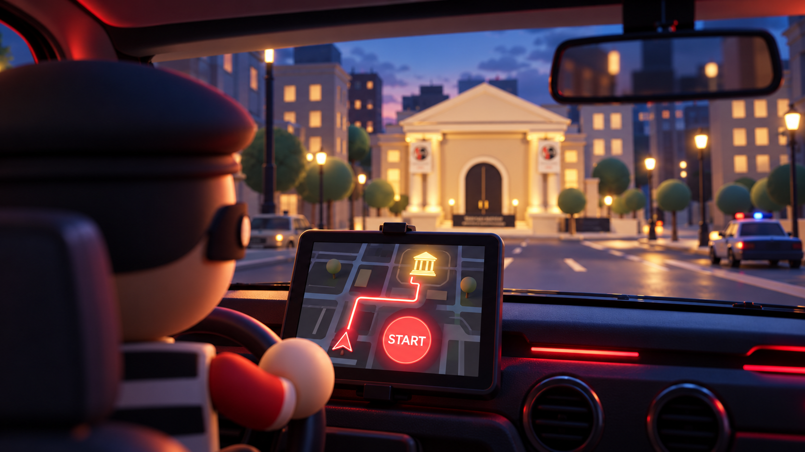

Your fourteen-scene sequence, approved in full by Omar. Same glossy toy style, rainy nighttime, warm bank lighting, Red robber, Blue officer, and red hatchback.
All 14 scenes approved by Omar. All images are illustrative concept art. The website and activity previews are labeled FIXTURE; team feeds and independent referee results will be connected later.
The unused battle room, auditor-room ending, and older winner concepts are out of this active sequence. Their original files are preserved. Blank display surfaces reserve space for the actual Bank Lab website and sanitized Red/Blue feeds.

APPROVED
Scene 01 · Approved opening retained
Ready · Approved by Omar
Your original driver viewpoint, route map and Start graphic are preserved.
Display / transition notes
Use a real keyboard-accessible Start control in the arena. The pictured START is decorative.
Red stands inside the damaged entrance and looks down the long lobby toward the distant closed vault. The red car has been removed from the doorway view.
Display / transition notes
Car removed from scene 03 only. The long lobby, robber viewpoint and distant closed vault are retained.
Red uses the keypad beside the closed vault. The enlarged website screen dominates the wall; the separate Red code screen below it is much smaller. The displayed website is straight and level.
Display / transition notes
Website HTML has no skew, rotation or perspective clipping. The two displays have a clear gap. Vault remains closed during the attempt.
BLUE DISPATCH · FIXTURE⚠ BANK LAB ALERTAvailability interruption Response requested Approaching Bank Lab Code feed inactive
FIXTURE SCREEN PREVIEW
APPROVED
Scene 06 · Cop view from the marked street area
Blue alert · Approved by Omar
Blue receives the alarm from inside the cop car at the marked end of the street, facing back down the road toward the bank ahead on the left.
Display / transition notes
The yellow-marked road area is the camera/car location, with the direction reversed toward the bank. Several lamp and tree spacings lead toward the bank. Dashboard is alert only; Blue code remains inactive until scene 11. The parked red hatchback is turned to preserve scene 08's direction; from this opposite cop viewpoint its front headlights and grille are visible.
The robber fills the cloth money bag fully inside the vault chamber, surrounded by storage shelves. No vault door, doorway or corridor is visible.
Display / transition notes
The camera looks into the enclosed storage interior, away from the entrance. Keep the fictional money collection as story art, separate from security evidence.
Red rushes from the bank steps to the open driver door of the red hatchback, preserving scene 08's parking spot beside the bank and its street viewpoint.
Display / transition notes
Scene 08 is the continuity reference: the car remains at the same curbside position near the damaged entrance. Only the robber action and driver door change.